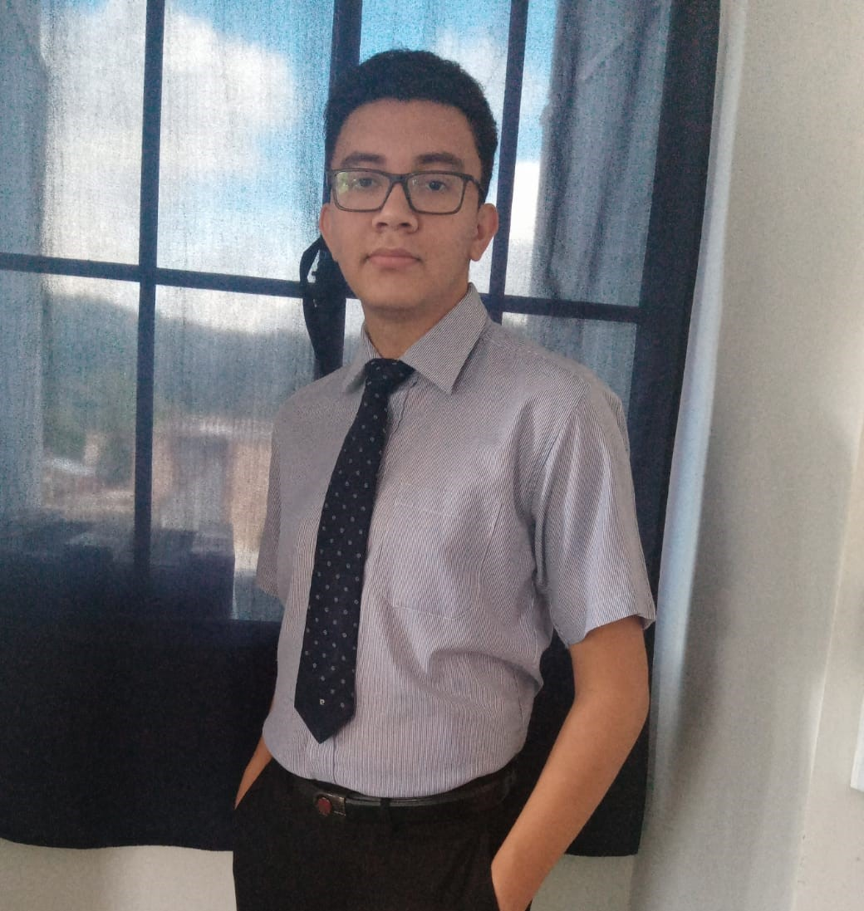

Soy Erick Fuentes, tengo 18, actualmente estoy estudiante el Técnico en computación en la Universidad Don Bosco y me siento orgulloso de formar parte de la familia salesiana y estoy en busca de mejorar cada día más como profesional y persona dentro de esta institución
Erick Eduardo Fuentes García
Acerca de Mi
Bryan Steven Cornejo Zavala
Acerca de Mi
Mi nombre es Bryan Steven Cornejo Zavala, tengo 18 años y actualmente estoy cursado mi segundo ciclo de la universidad en la carrera de técnico en sistemas. en estos días he estado trabajando en una página web para la Universidad Don Bosco, la misma Universidad en la que estudio y ha sido la culminación de muchos estudios proporcionados por mi docente y los cuales he implementado en la página web.